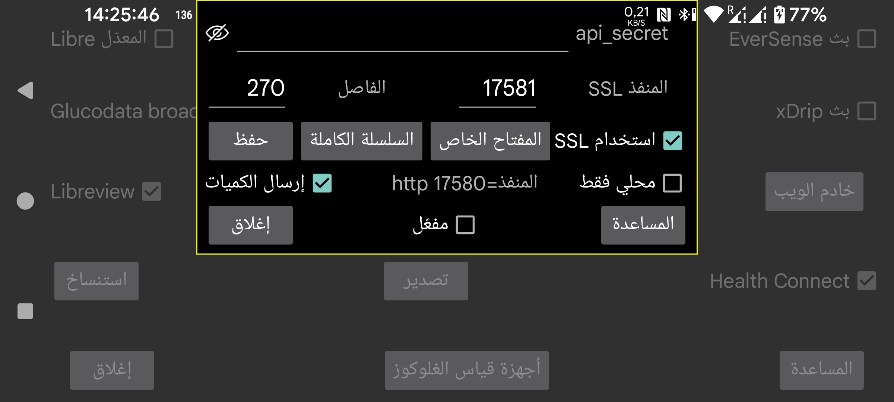

يتضمن Juggluco خادم ويب يمكن لتطبيقات أخرى بواسطته استقبال قيم الغلوكوز من Juggluco. ويمكن استخدامه مع ساعات xDrip وبعض تطبيقات Nightscout.
استخدام التطبيقات المصممة للاستفادة من خادم xDrip webserver سهل نسبيًا. يكفي تفعيل «مفعّل». وبعد ذلك يمكن لهذه التطبيقات استقبال الغلوكوز من 127.0.0.1 على المنفذ 17580. عنوان خادم Nightscout هو: http://127.0.0.1:17580
كما يمكن لبعض تطبيقات المتابعة الخاصة بـ Nightscout استخدامه أيضًا. ويمكن استخدام xDrip وDiabox وتطبيق Windows Floating Glucose وودجت يعمل على Windows وLinux وmacOS (Owlet) عبر http عندما لا يكون خيار "محلي فقط" مفعّلًا. وينطبق الشيء نفسه على MacOS مع Nightscout Menu Bar وGluco Status وGluco Tracker (كلها في متجر Apple). كما أنك تحتاج إلى http فقط لكل من Nightscouter وLoopFollow (iOS) وNightguard (iOS وWatchOS).
إذا أردت الوصول إلى Juggluco عبر الإنترنت، فعليك تحويل منفذ من المودم. انظر:
https://www.makeuseof.com/tag/what-is-port-forwarding-and-how-can-it-help-me
القائمة الوسطى اليسرى->استنساخ->إضافة اتصال->مساعدة
أما متابعو Nightscout الآخرون فلا يستخدمون إلا https، وهذا يتطلب أن يمتلك Juggluco مفتاح SSL موثّقًا لاسم النطاق الذي سيُستخدم للوصول إلى Juggluco. وإذا كان لعنوان IP الخارجي اسم مضيف مرتبط به، فيمكنك الحصول على شهادة مجانية عبر Certbot. ولا يمكنك الاستفادة من ذلك إذا لم يكن لعنوان IP الخارجي اسم مضيف. ويمكنك الحصول على اسم نطاق مجاني من https://www.freenom.com. لقد جرّبته، لكنهم سحبوا النطاق مني خلال بضعة أسابيع من دون أي إشعار، وعندما حاولت تسجيله من جديد أصبح مدفوعًا. يمكنك شراء اسم نطاق ببضعة يوروهات في السنة (مثلًا من https://www.strato.nl/domeinnaam).
بعد تثبيت Certbot وتحويل المنفذ 80 (http) من المودم إلى جهاز الكمبيوتر، يمكنك ببساطة تنفيذ:
certbot certonly --standalone --preferred-challenges http -d myhostname
انظر https://devpress.csdn.net/linux/62e7999e907d7d59d1c8cfd0.html.
بعد استخدام Certbot وجدت المفتاح الخاص في /etc/letsencrypt/live/myhostname/privkey.pem وسلسلة الشهادات الكاملة في /etc/letsencrypt/live/myhostname/fullchain.pem. و"myhostname" هو اسم المضيف الذي استخدمته.
إذا كنت قد استلمت ملفات المفاتيح من جهة إصدار شهادات SSL، فيجب أن تُعطيها إلى Juggluco. ويمكن قراءة المفتاح الخاص بالضغط على "المفتاح الخاص"، وقراءة السلسلة الكاملة بالضغط على "السلسلة الكاملة".
إذا كنت تريد فقط إرسال قيم الغلوكوز من جهاز Android إلى آخر، فمن الأفضل استخدام وظيفة الاستنساخ في Juggluco (القائمة الوسطى اليسرى->استنساخ).
تحتاج تطبيقات Android مثل AAPS وDiabetes:M وNightwatch وCheckmate، وكذلك Sugarmate (MacOS وiOS) وXdrip4ios وShuggah وCockpit (iOS) إلى SSL. حدّد عنوان خادم Nightscout بالشكل:
https://hostname:port
hostname هو اسم المضيف الخاص بالمفتاح الموثق الذي أدخلته إلى Juggluco، وport هو المنفذ الذي حولته إلى المنفذ الذي حددته في هذه الشاشة (الافتراضي: 17581).
يمكن استخدام AAPS مع Juggluco 7.3.0 وما بعده. ولأجل ذلك يجب اختيار NSClientV3 في AAPS مع الإعدادات التالية:
استخدم قيمة NS access token نفسها المبيّنة هنا كـ api-secret؛
ألغِ تحديد “Connect to websockets”؛
تحت “Synchronization”، أوقف جميع الرفع. واترك مفعّلًا فقط:
Receive/backfill CGM data؛
Receive Insulin؛
Receive carbs؛
Receive therapy events؛
وأوقف جميع “advanced settings”.
إدخال الكميات قبل كميات سبق إدخالها يؤدي إلى وجود علاجات مكررة في AAPS. ويحدث هذا أيضًا عندما تُستخدم واجهة v3 مع خادم Nightscout يستقبل رفعات v3 من Juggluco.
وأحيانًا لا يبدأ AAPS في طلب العلاجات من الخادم إلا بعد إيقاف AAPS إيقافًا إجباريًا ثم إعادة تشغيله.
يمكن أيضًا تشغيل خادم الويب على جهاز Linux. وسيستقبل بياناته من اتصال استنساخ قادم من Juggluco المتصل بالمستشعر: https://www.juggluco.nl/Juggluco/cmdline.
يمكن لهاتف آخر أن يتصل بهذا الخادم عبر اتصال استنساخ أو كمتابع Nightscout (مثلًا على iPhone). وإذا كان هناك تطبيق Nightscout لا يعمل مع خادم الويب هذا، فأخبرني بذلك. ربما يمكن جعله يعمل ببعض التعديلات البسيطة. (أما تطبيقا Nightscout وNightscout X على iOS فهما مخصّصان لبرنامج Nightscout معيّن واحد، ولن يعملا مع Juggluco.)
api_secret: حدّد أن على المتابعين ضبط عنصر الترويسة http المسمى api_secret على هذه القيمة. ويعمل هذا السر أيضًا عندما يستخدمه المتابعون على شكل Nightscout token أو عندما يستخدمون ترويسة api-secret مع سر مشفّر بـ SHA1. وابتداءً من Juggluco 7.1.15 أصبح من الممكن أيضًا جعل api_secret هو العنصر الأول في مسار عنوان خادم Nightscout. فإذا كان xyz هو api_secret وكان عنوان خادم Nightscout هو http://hostname:port، فيمكنك تحديد http://hostname:port/xyz كعنوان خادم Nightscout.
مرئي: يجعل السر ظاهرًا.
المنفذ: حدّد منفذ الشبكة المستخدم للوصول إلى خادم https. القيمة الافتراضية هي 17581.
حفظ: يحفظ التعديلات التي أُجريت على api_secret أو المنفذ.
استخدام SSL: يستخدم SSL (https). ولأجل SSL يجب أن تعطي مفتاحًا خاصًا وسلسلة شهادات كاملة لاسم المضيف المستخدم للوصول إلى هذه الخدمة.
المفتاح الخاص: اختر ملفًا يحتوي على المفتاح الخاص. انظر أعلاه.
السلسلة الكاملة: اختر ملفًا يحتوي على السلسلة الكاملة، كما سبق شرحه أعلاه.
الفاصل: الفاصل الأدنى الافتراضي بين قيم الغلوكوز، بالثواني. ويكون عادة 270 ثانية. ويمكن للطلب أيضًا تغيير هذه القيمة عن طريق تمرير الخيار interval=. انظر https://www.juggluco.nl/Juggluco/webserver.html
محلي فقط: لا يمكن الوصول إلى خادم http إلا من localhost (127.0.0.1). وهذا لا ينطبق على https.
إرسال الكميات: يجعل من الممكن استقبال الكميات المُدخلة باستخدام http://127.0.0.1:17580/api/v1/treatments?count=3. (يجب أن تحدد لكل تسمية ما الذي ينبغي فعله بها. في السابق كان ذلك هو نفسه المستخدم في Libreview، لكن بعد الإصدار 4.18.0 أصبح بالإمكان وضع التسميات في فئات مختلفة لـ Libreview وهذا الخادم.) ومن خلال هذه الواجهة يمكن لـ xDrip استقبال الكميات من Juggluco. ويمكن فعل ذلك في xDrip بطريقتين:
اختر كـ "Hardware Data Source" خيار "Nightscout Follower"، وأعطِ في “Follow URL” القيمة http://127.0.0.1:17580، ثم فعّل “Download Treatments”.
أو اختر مصدر بيانات آخر مثل Libre (patched app)، ثم فعّل Settings->Cloud Upload->Nightscout Sync (REST-API). وأدخل كـ Base API URL العنوان http://somekey@127.0.0.1:17580/api/v1/ ثم فعّل "Download treatments". الرفع إلى Juggluco غير ممكن، لذلك فهذا الخيار يحمّل العلاجات فقط ويُظهر بعض رسائل الخطأ.
عندما يكون خيار "محلي فقط" غير محدد، يمكنك أيضًا استخدام عنوان IP الخاص بالشبكة المنزلية للهاتف الذي يعمل عليه Juggluco، وعندما تضبط المودم لتحويل الاتصالات إلى المنفذ 17580 على ذلك الهاتف، يمكنك أيضًا استخدام عنوان IP الخارجي لذلك الهاتف. وإذا كنت قد أعطيت Juggluco مفتاحًا خاصًا وسلسلة كاملة لاسم مضيف يمكن الوصول إلى الهاتف من خلاله، وفعّلت استخدام SSL، فيمكنك كذلك استخدام ذلك الاسم المضيف والمنفذ الذي حددته هنا، مع https بدلًا من http.
إذا أردت رفع العلاجات إلى Diabetes:M، فيمكنك إما إرسال بيانات Juggluco إلى Libreview ثم حفظ البيانات من Libreview عبر “Download Glucose data” واستيرادها في Diabetes:M من خلال Data->Import from other sources->Freestyle، أو الحصول على مفتاح موثّق لاسم المضيف الخارجي لهاتفك ثم إعطاء Diabetes:M مصدرًا خارجيًا من نوع Nightscout بعنوان https://yourhostname:Port، حيث yourhostname هو اسم مضيف الهاتف الذي يشغّل Juggluco والذي حصلت له على مفتاح موثّق، وPort هو المنفذ المذكور هنا. ويبدو أن المزامنة لا تتم تلقائيًا، لذلك عليك الضغط على Sync بنفسك داخل Diabetes:M.
مفعّل: يعني أن خادم الويب يعمل.
لمزيد من المعلومات عن أوامر خادم Nightscout/xDrip التي ينفذها Juggluco، راجع https://www.juggluco.nl/Juggluco/webserver.html